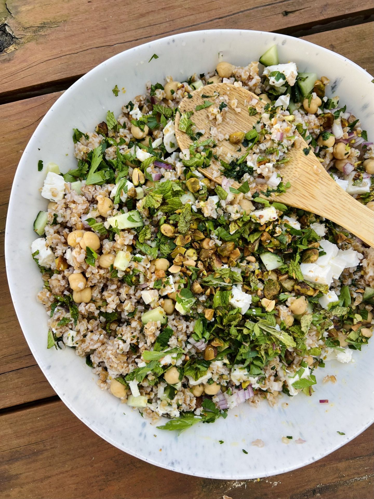

Jennifer Anniston's Salad Recipe
Back in 2020, maybe you remember being lied to about Jennifer Aniston's salad
that she ate everyday during the run of "Friend's". Full of great veggies, grains, and feta cheese, it's a delicious salad
even if Jen and her pals didn't eat it everyday.
Ingredients
- 1 cup quinoa (or bulgar if you prefer)
- 8oz feta chees
- cherry tomatoes
- 3 large seedless cucumbers
- 1 pack shelled pistachios
Steps
The steps are easy enough to follow!
- Cook the quiona or bulgar as directed on your package. Allow time to cool
- Chop up tomatoes and cucumbers
- Combine everything and enjoy! Warm or cold the salad is delicious.